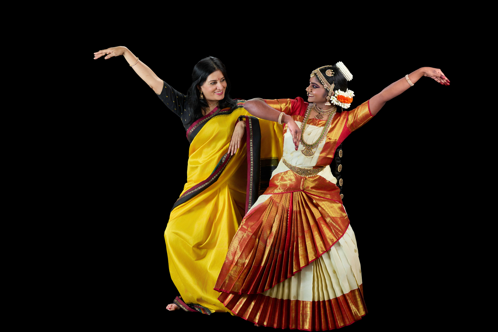

The Guru
Alpana Kagal
Alpana Kagal was inspired to join the Arathi School of dance after watching her Guru, Smt. Revathi Satyu’s riveting performance. Alpana began training and performed her Arangetram, in 1987 under the guidance of Smt. Revathi Satyu. She has continued studying and deriving inspiration under the guidance of Smt. Revathi Satyu, where she has participated in dance dramas such as Anmol Bhakti, Virangana, Nava Rasa Sansar, and Akhilam Madhuram. She has had further training with Guru’s Mahalingam Pillai, U.S. Krishna Rao and Chandrabhaga Devi, Padmini Ravi, Priyadarshini Govind, Maya Rao, and Radhika Ganesh.
In 1995 Alpana was featured as a lead dancer with the folk-dance company called ‘Sundara Mana Madhi Barali’. Alpana was a resident artist and performer with Big Thought of North Texas. She was highlighted in the Dallas Guide as a top children’s performer and has worked with the Dallas Theater Center’s summer program in merging dance and theater.
Alpana conducts various master classes and has created choreography for Texas Woman’s University, The University of North Texas, The University of Dallas, Brookhaven College, and Booker T. Washington school of arts. She currently resides in Frisco, Tx with her children Savini, Jude, and Siena.
